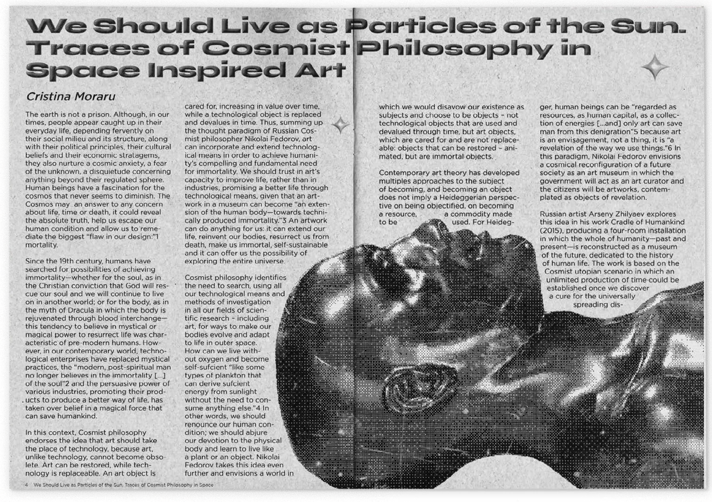
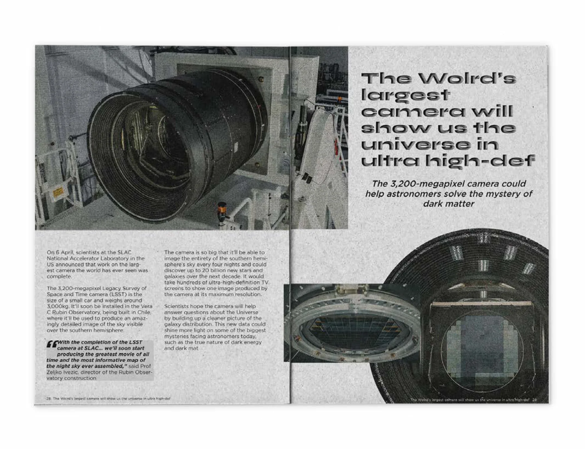
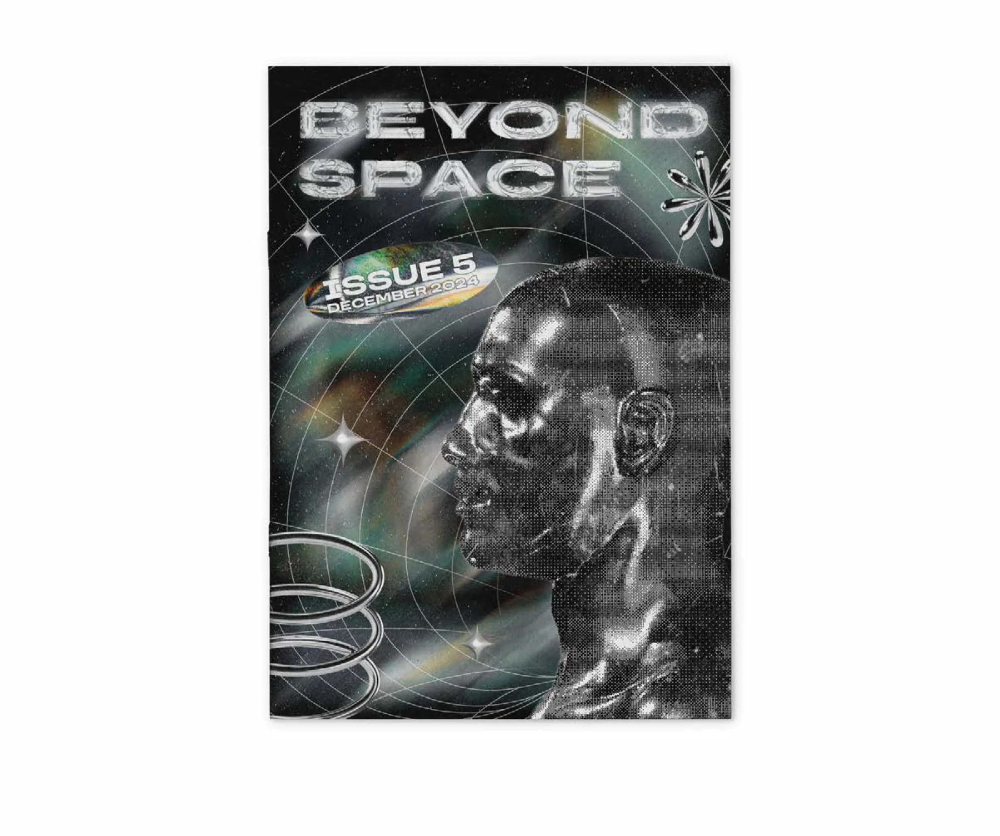
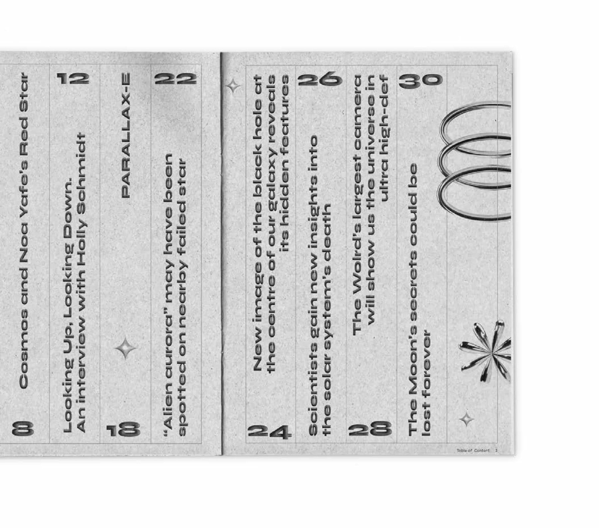
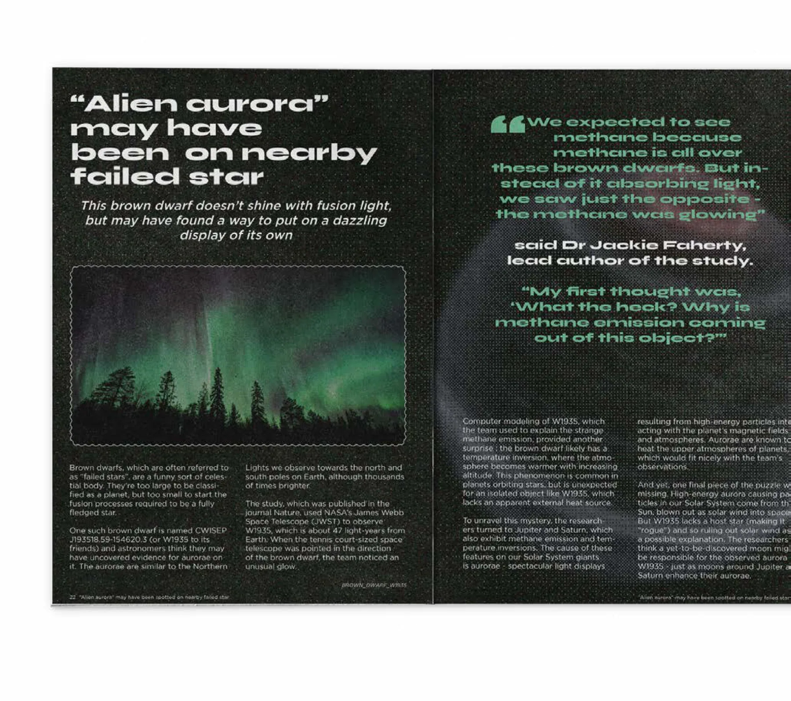
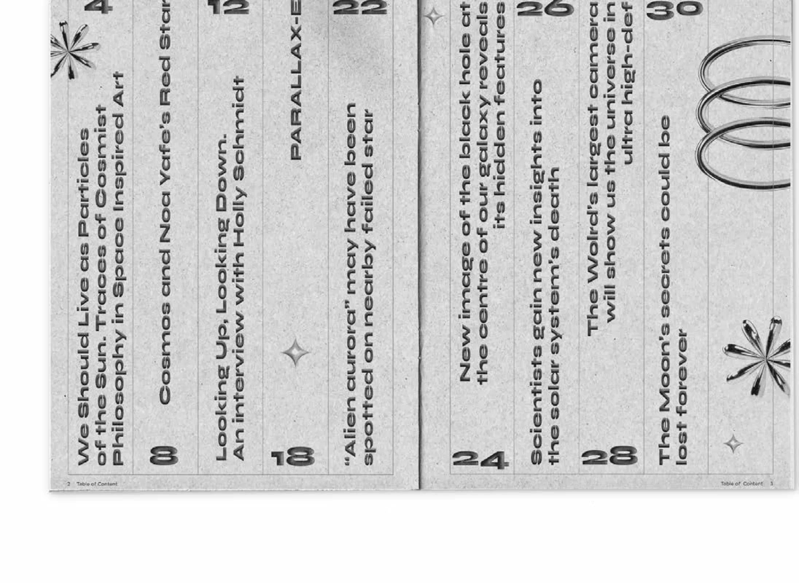
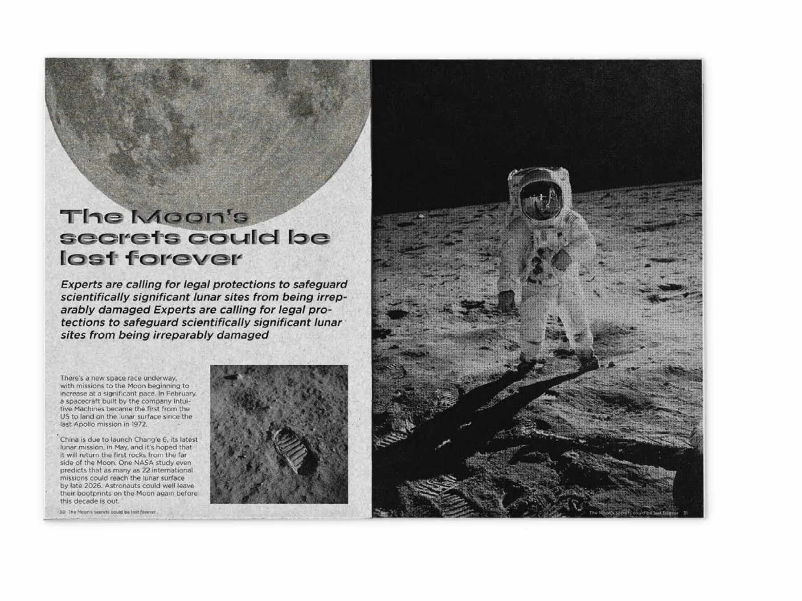
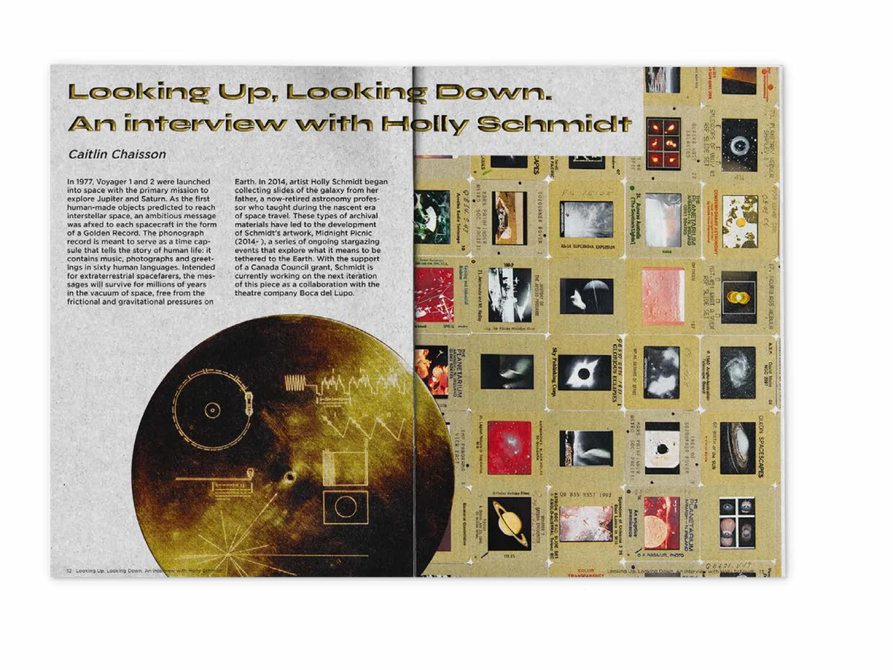
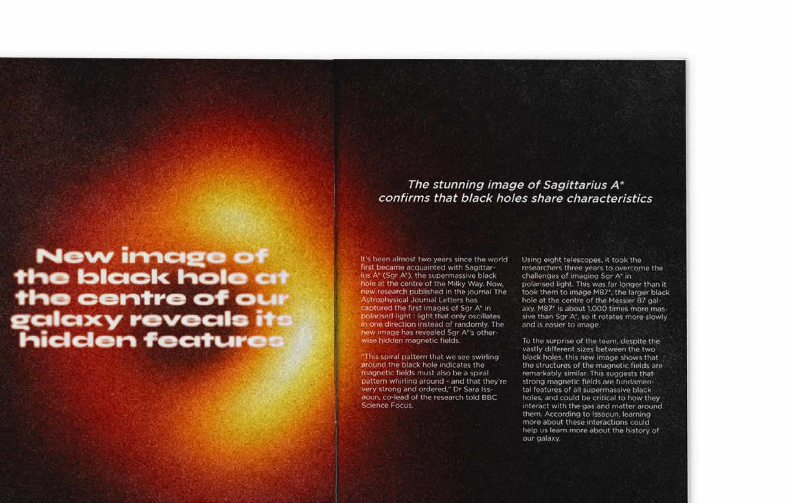

PHAM Nhu Quynh
Contact
PHAM Nhu Quynh
Contact
“Beyond Space”Magazine Project — Editorial Design & Art Direction
Adobe InDesign, Adobe Photoshop
« Beyond Space »Projet de magazine — design éditorial et direction artistique
Adobe InDesign, Adobe Photoshop

“« Beyond Space” » Magazine
Project BriefBrief du projet
Beyond Space is a conceptual magazine that explores the theme of space from both scientific and artistic perspectives. I was responsible for the artistic direction of the magazine, developing the visual identity, editorial layout, and image editing.
Beyond Space est un magazine conceptuel qui explore le thème de l’espace sous un angle à la fois scientifique et artistique. J’en ai assuré la direction artistique : identité visuelle, mise en page éditoriale et retouche d’images.
“Beyond Space” MagazineEditorial Design & Art Direction · Adobe InDesign, Adobe Photoshop
Magazine « Beyond Space »Design éditorial et direction artistique · Adobe InDesign, Adobe Photoshop

Target AudiencesPublics cibles
Inspired by sci-fi culture and experimental editorial design, the project targets a young, creative audience interested in space and contemporary visual art.
Inspiré de la culture science-fiction et du design éditorial expérimental, le projet s’adresse à un public jeune et créatif, passionné d’espace et d’art visuel contemporain.
Artistic DirectionDirection artistique
The magazine merges futuristic aesthetics with nostalgic nods to early 2000s (Y2K) design trends, using a balance of maximalism for the cover and minimalism for the internal pages. Visual elements include holographic and metallic textures, bitmap and noise effects, and geometric patterns like spirals, grids, and circular motifs to reflect the vastness and complexity of space.
Le magazine associe une esthétique futuriste à des clins d’œil nostalgiques aux tendances graphiques du début des années 2000 (Y2K), en équilibrant maximalisme pour la couverture et minimalisme pour les pages intérieures. Parmi les éléments visuels : textures holographiques et métalliques, effets bitmap et bruit, motifs géométriques — spirales, grilles, cercles — pour traduire l’immensité et la complexité de l’espace.

Magazine spreadsDoubles pages du magazine






